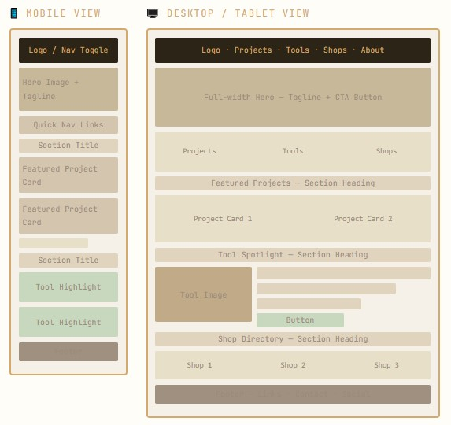
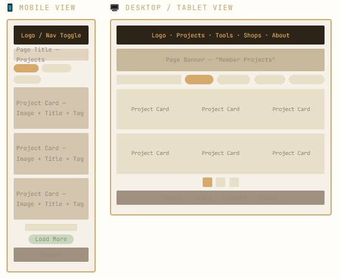
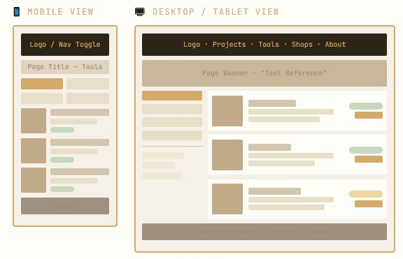
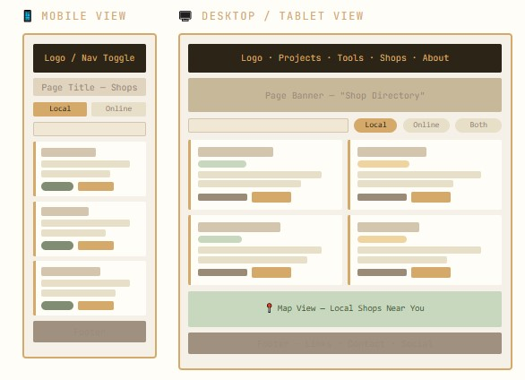

Site Name
"The Wood Guild" evokes a sense of craftsmanship, tradition, and community — all central to the woodworking world. The word Guild historically refers to associations of skilled artisans, which perfectly captures the collaborative spirit of the site.
Site Purpose
The Wood Guild is a community hub for local woodworking enthusiasts of all skill levels. The site provides a curated gallery of member projects for inspiration, an organized reference of recommended tools with tips on how to use them, and a directory of local and online shops where members can purchase quality materials, lumber, and equipment.
Beyond being a resource guide, the site fosters community by allowing visitors to explore what others are building, discover new techniques, and find everything they need to start or continue their woodworking journey — all in one place.
Scenarios
- I'm a beginner — what are the essential hand tools I should buy first before investing in power tools?
- Where can I find a local shop near me that sells quality hardwood lumber like walnut or white oak?
- I want to build a dining table — are there any project examples on the site I can use as inspiration or reference?
- What's the difference between a cabinet saw and a contractor saw, and which one is better for a home workshop?
Color Scheme
The palette draws from the natural tones of wood, sawdust, charcoal, and forest greenery to create a warm, earthy, and trustworthy visual identity.
- #F5F0E8 — Parchment Page background
- #2C2416 — Charcoal Body text, header bg
- #8B5E3C — Oak Brown Headings, section borders
- #D4A96A — Sawdust Gold Accents, highlights, borders
- #4A5E3A — Forest Moss Secondary accent, links
- #FFFDF7 — Off-White Card & section surfaces
Typography
- Font 1 — Playfair Display · Headings & Display Used for: H1, H2, section titles, hero text. Adds elegance and a sense of tradition.
- Font 2 — Source Serif 4 · Body & Content Used for: paragraphs, descriptions, navigation, and general content. Warm and highly readable.
- Font 3 — JetBrains Mono · Labels & Metadata Used for: tags, labels, section numbers, tool specs, and code-like metadata. Adds technical precision.
Site Plan & Wireframe Index
Below are the responsive layout blueprints for each section of the website.
-
1. Homepage / Main Dashboard

Includes main navigation, full-width hero header, featured project cards, tool spotlights, and shop directory previews.
-
2. Member Projects Gallery

Displays user-submitted builds in a responsive 3-column grid filterable by category, complete with asynchronous pagination.
-
3. Tool Reference Library

A technical reference database utilizing a split-screen design with multi-layered sidebar filters and metadata spec tags.
-
4. Shop Directory & Map

A geographical and digital vendor finder featuring a 2x2 card layout, interactive layout filters, and an integrated map view.